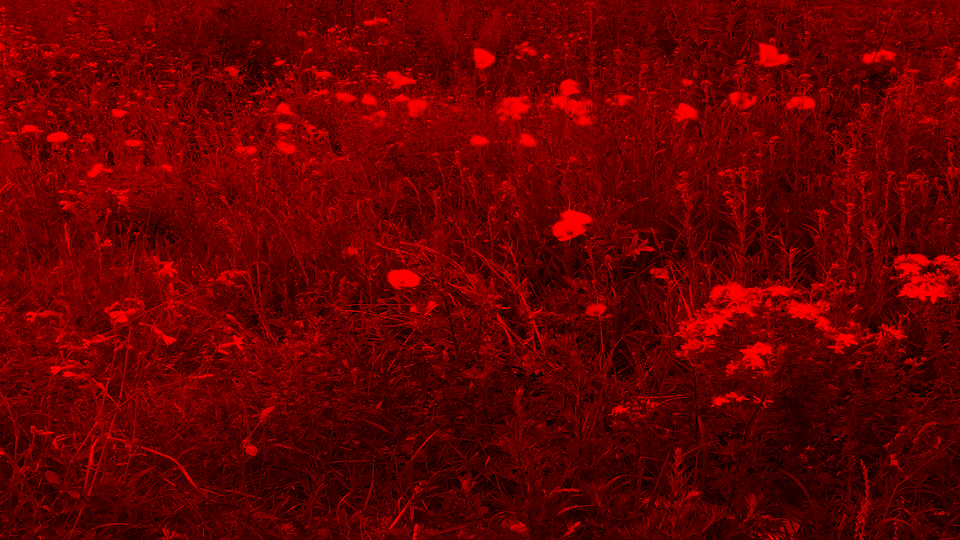
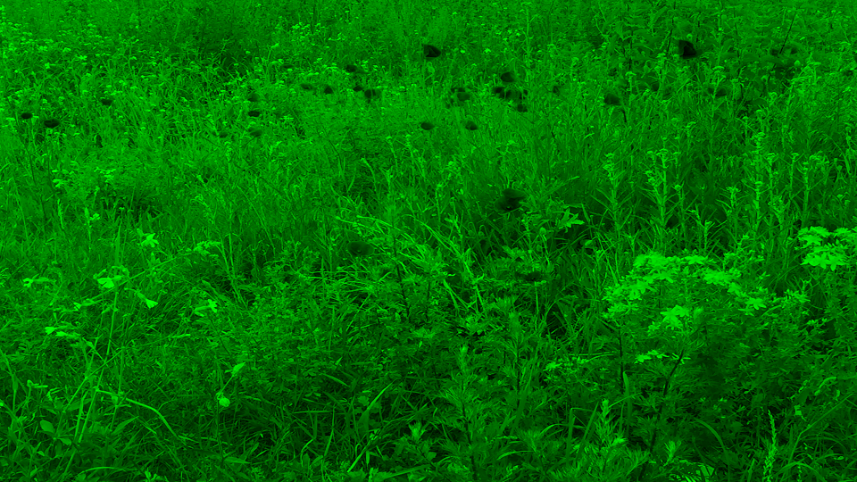
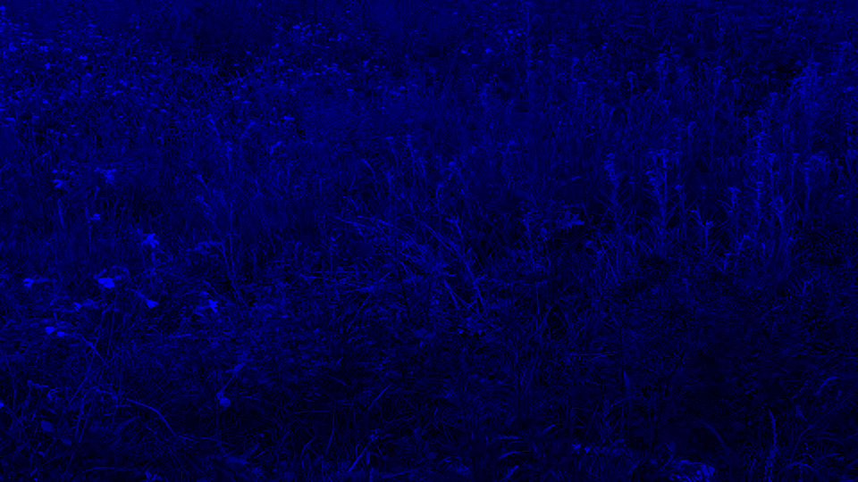
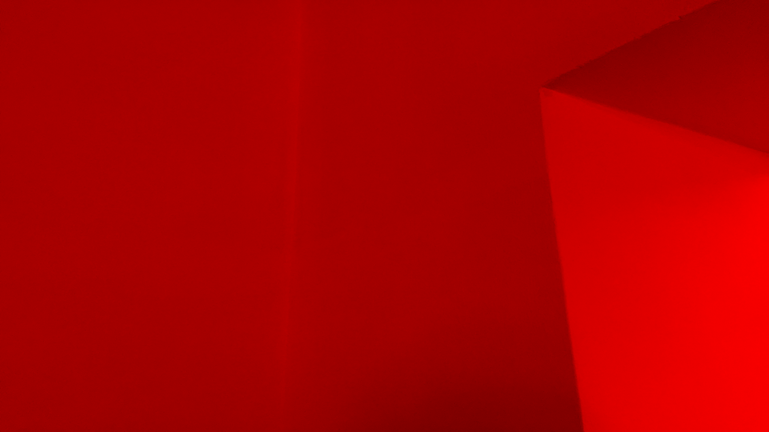
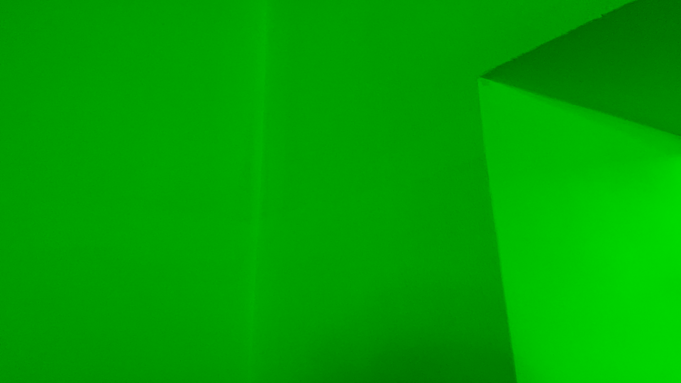
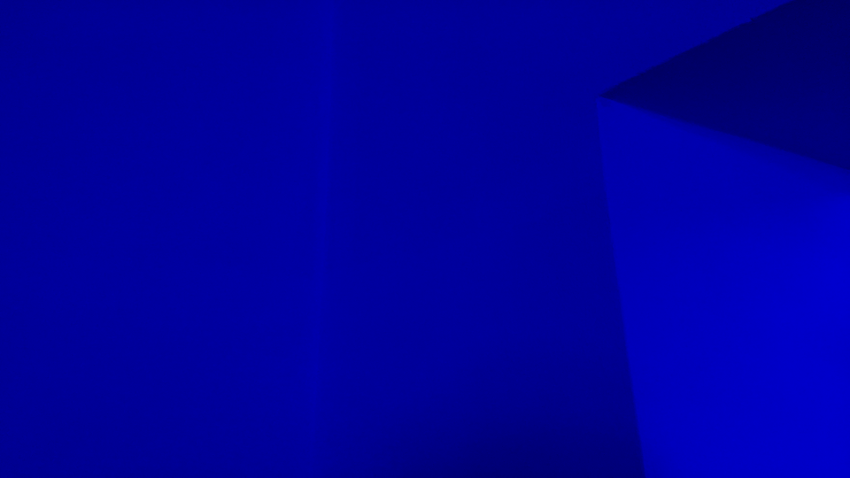
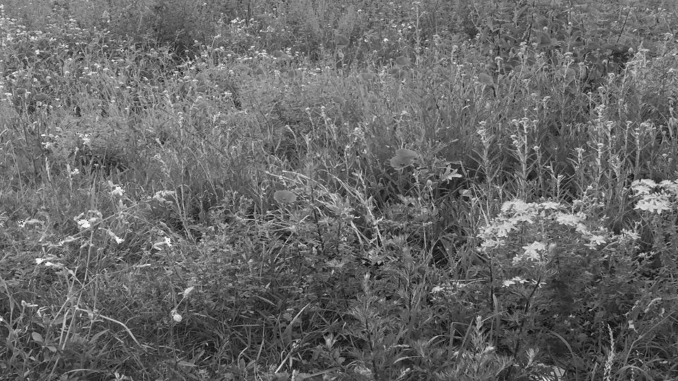
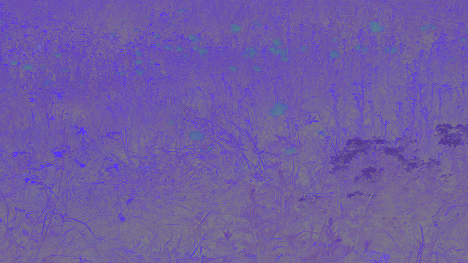
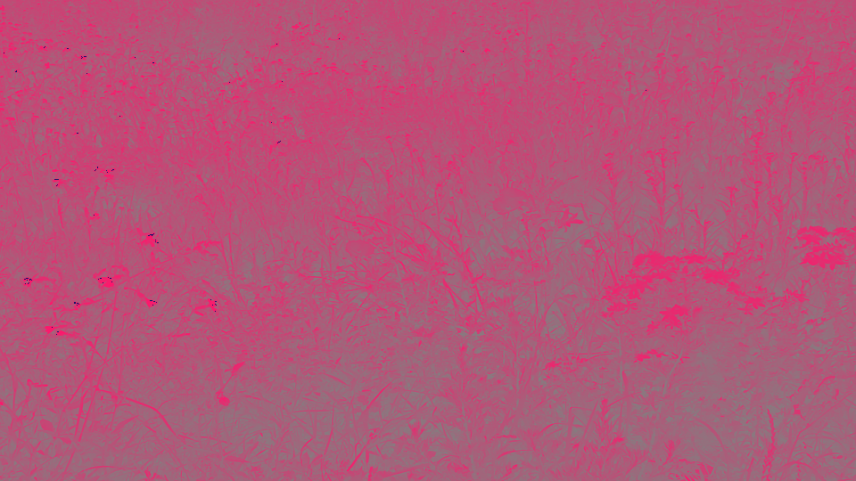

Einleitung: Nutze für die Aufgaben die euch schon bekannte bmp_io. Für die Übung benötigt ihr außerdem eurer eigenes Detailbild.
a. RGB ist der gebräuchlichste Farbraum bei der Aufzeichnung und Darstellung von Bildern. Hier wird das Lichtspektrum in seine Rot-, Grün- und Blauanteile aufgespalten. Der YCbCr Farbraum hingegen besteht aus der Luminanz Y (Helligkeit) und den Farbanteilen (Chrominanz) Cb und Cr. Die RGB Farben eines Bildes lassen sich also in den YCbCr Farbraum transformieren. Für viele Anwendungen, z.B. die Bildkompression, ist es günstig, Helligkeits- und Farbinformation getrennt zu verarbeiten. Nenne den physiologischen Grund dafür!
Lösung
Die Menschliche Wahrnehmung ist Eingeschränkt.Die wahrnehmung von von geringen Helligkeitsabweichung in einheitlichen Flächen ist relativ groß, dafür aber bei kleinen Details gering. Das Menschliche Auge reagiert empfindlicher auf Helligkeitsveränderungen (Y) als gegenüber Farbveränderungen(Cb & Cr). Die Veränderung von kleinen Helligkeitsunterschieden werden eher wahrgenommen als geringe Veränderung der Farbe. Mit dieser Erkenntniss werden Bilder und Bildausschnitte entsprechend umgewandelt. Die Helligkeits- und Farbinformationen werden bei Farbbildern, getrennt komprimiert. Dabei werden die Farben, die das Auge geringer auflöst als die Helligkeit, mit einer niedrigeren Sampletiefe im Farb-Subsampling abgetastet.
b. Erstelle aus deinem eigenen Bild Versionen, die nur jeweils den Rot-, Grün- und Blauanteil zeigen. (Hinweis: Dazu müssen einfach die jeweils anderen Farbwerte auf null gesetzt werden).
Lösung
Roter Farbkanal Grüner Farbkanal Blauer Farbkanal
|  |  |  |
Roter Farbkanal Grüner Farbkanal Blauer Farbkanal
|  |  |  |
Code
for(int y = 0; y < bmp.image.getHeight(); y++) {
for(int x = 0;x< bmp.image.getWidth(); x++) {
PixelColor color = null;
String channel = "red";
int red = bmp.image.getRgbPixel(x, y).r;
int green = bmp.image.getRgbPixel(x, y).g;
int blue = bmp.image.getRgbPixel(x, y).b;
switch(channel) {
case "red":
color = new PixelColor(0,0,red);
break;
case "green":
color = new PixelColor(0,green,0);
break;
case "blue":
color = new PixelColor(blue,0,0);
break;
}
bmp.image.setRgbPixel(x, y, color);
}
}
c. Nun erzeuge jeweils ein Bild für Y, Cb und Cr. Lese dafür jedes Pixel ein und berechne die Helligkeit Y (Luminanzformel!) sowie die Chrominanzen Cb und Cr (Chrominanzformeln!) aus den RGB Werten.
Lösung
RGB Y Cb Cr
|
 |  |  |
Code
for (int y = 0; y < bmp.image.getHeight(); y++) {
for (int x = 0; x < bmp.image.getWidth(); x++) {
PixelColor color = null;
int red = bmp.image.getRgbPixel(x, y).r;
int green = bmp.image.getRgbPixel(x, y).g;
int blue = bmp.image.getRgbPixel(x, y).b;
ArrayList<Integer> rgb = new ArrayList<>(Arrays.asList(red, green, blue));
ArrayList<Integer> rgbToYCbCr = rgbCr(rgb);//eine der 3 methoden(rgbY, rgbCb oder rgbCr) wählen
int rY = rgbToYCbCr.get(0);
int gY = rgbToYCbCr.get(1);
int bY = rgbToYCbCr.get(2);
color = new PixelColor(bY, gY, rY);
bmp.image.setRgbPixel(x, y, color);
}
}
private static ArrayList<Integer> rgbY(ArrayList<Integer> rgb, double lum){
int red = rgb.get(0);
int green = rgb.get(1);
int blue = rgb.get(2);
double Y = ((0.299red) + (0.587green) + (0.114*blue)) + lum;
int yR = (int)Y;
int yG = (int)Y;
int yB = (int)Y;
ArrayList<Integer> Yrgb = new ArrayList<>(Arrays.asList(yR, yG, yB));
return Yrgb;
}
private static ArrayList<Integer> rgbCb(ArrayList<Integer> rgb){
int red = rgb.get(0);
int green = rgb.get(1);
int blue = rgb.get(2);
int cbR = (int)(-0.1688red)+128;
int cbG = (int)(-0.3312green)+128;
int cbB = (int)(0.5*blue)+128;
ArrayList<Integer> CbRgb = new ArrayList<>(Arrays.asList(cbR, cbG, cbB));
return CbRgb;
}
private static ArrayList<Integer> rgbCr(ArrayList<Integer> rgb){
int red = rgb.get(0);
int green = rgb.get(1);
int blue = rgb.get(2);
int crR = (int)(0.5red)+128;
int crG = (int)(-0.4187green)+128;
int crB = (int)(-0.0831*blue)+128;
ArrayList<Integer> CrRgb = new ArrayList<>(Arrays.asList(crR, crG, crB));
return CrRgb;
}
d. Wandle zur Rekonstruktion deines Bildes die YCbCr Werte zurück in RGB. Ins Übungsprotokoll: Sourcecode, Bilder R, G, B bzw. Y, Cb und Cr, Rekonstruiertes Bild YCbCr -> RGB
Lösung
Code
private static ArrayList<Double> YCbCrToRGB(ArrayList<Double> YCbCr) {
double Y = YCbCr.get(0) + YCbCr.get(1) +YCbCr.get(2);
double Cb = YCbCr.get(4) + YCbCr.get(5) +YCbCr.get(6);
double Cr = YCbCr.get(7) + YCbCr.get(8) +YCbCr.get(9);
double red = (int) ((1Y) + (0(Cb-128)) + (1.403(Cr-128)));
double green = (int) ((1Y) + (-0.344(Cb-128)) + (-0.714(Cr-128)));
double blue = (int) ((1Y) + (1.773(Cb-128)) + (0*(Cr-128)));
return new ArrayList<>(Arrays.asList(red, green, blue));
}
Mithilfe eines Histogramms kann die Verteilung (Häufigkeit) der Helligkeiten eines Bildes dargestellt werden. Erstelle ein Histogramm für das monochrome Detailbild aus Aufgabe 1 (Y - Bild). Lese dafür den Helligkeitswert der Pixel ein und bestimme die Helligkeitshäufigkeiten (Anzahl gleicher Helligkeiten). Diese sollen in eine Textdatei geschrieben und als Histogramm dargestellt werden (z.B. in Excel, Java). Ins Übungsprotokoll: Sourcecode, Histogramm des Bildes
Lösung
Code
for (int y = 0; y < bmp.image.getHeight(); y++) {
for (int x = 0; x < bmp.image.getWidth(); x++) {
int red = bmp.image.getRgbPixel(x, y).r;
int green = bmp.image.getRgbPixel(x, y).g;
int blue = bmp.image.getRgbPixel(x, y).b;
int av = (red+green+blue)/3;
if (av >= 0 && av <= 255) {
histogramm.set(av, histogramm.get(av)+1);
} else {
throw new RuntimeException("Außerhalb des Intervall(0-255)");
}
}
}
a. Berechne die mittlere Helligkeit des monochromen Detailbildes aus Aufgabe 1 (Y - Bild). Lese dafür den Helligkeitswert der Pixel ein. Die mittlere Helligkeit ist die Summe aller Helligkeitswerte geteilt durch die Anzahl der Bildpunkte. Berechne auch den Kontrast des Bildes, d.h. die Standardabweichung der Helligkeit.
Lösung
b. Verändere das monochrome Bild in der Helligkeit durch Subtrahieren bzw. Addieren eines konstanten Werts (20 +/- Schrittweite) bis zur minimalen (dunkel) und maximalen (hell) Helligkeit, d.h. so dass das jeweilige Motiv gerade noch zu erkennen ist. Beachte dabei, dass ihr beim Ergebnis der Pixelwertberechnung im 8-Bit-Bereich bleibt. Berechne die Histogramme des hellsten und dunkelsten Bildes
Lösung
Code
c. Erhöhe bzw. verringere den Kontrast durch Multiplikation mit den Faktoren k=(0.2, 0.4, 0.8, 1.0) sowie k=(1.5, 2.5, 5.0, 10.0). Ab welcher Verstärkung bleibt nur noch ein s/w Bild? Was würde bei einer Kontraständerung mit k < 0 passieren (Einfach ausprobieren und Bild speichern!)?
Berechne auch hier das Histogramm des kontrastärmsten und kontrastreichsten Bildes und vergleiche mit denen der Helligkeitsänderung. Was haben Helligkeits- und Kontraständerung für eine Auswirkung auf das Histogramm (Vergleiche auch mit dem Histogramm aus Aufgabe 2)? Ins Übungsprotokoll: Sourcecode, Ergebnisse für mittlere Helligkeit und Kontrast, Ergebnisse Minimum/Maximum für Helligkeit und Kontrast mit dazugehörigen Histogrammen, Alle Bilder
Lösung
Code